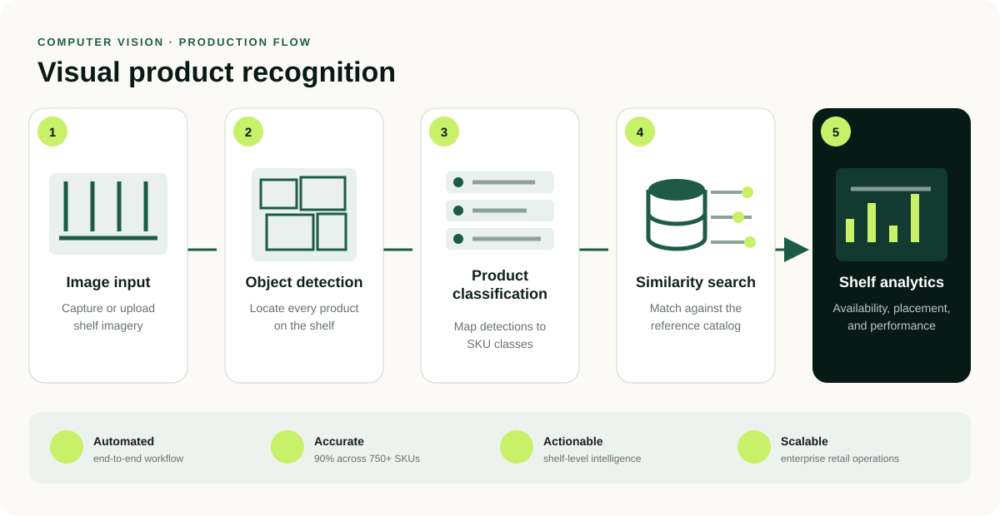
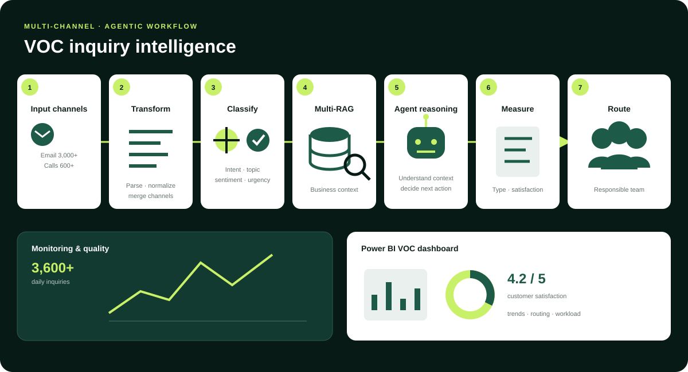
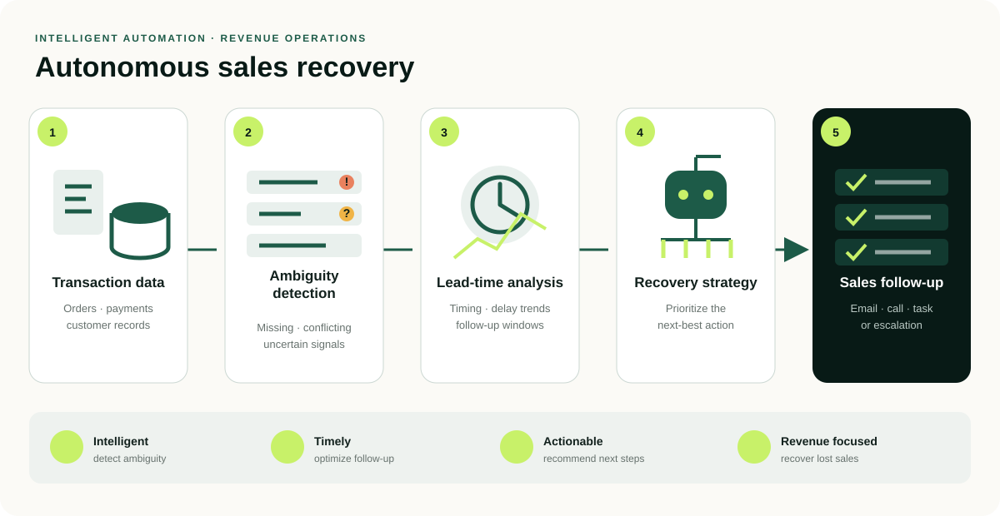
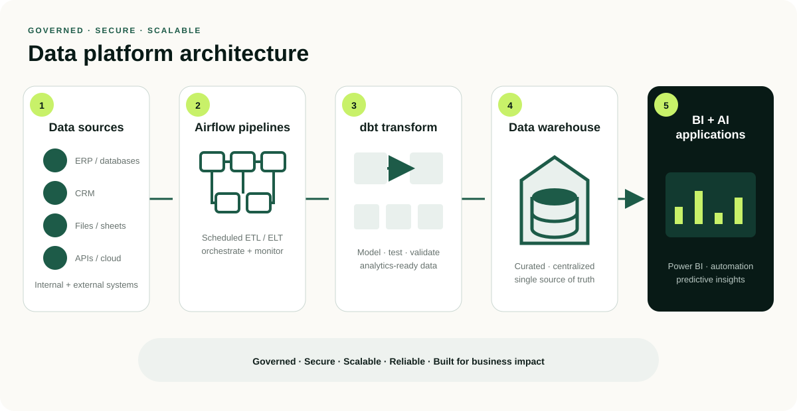
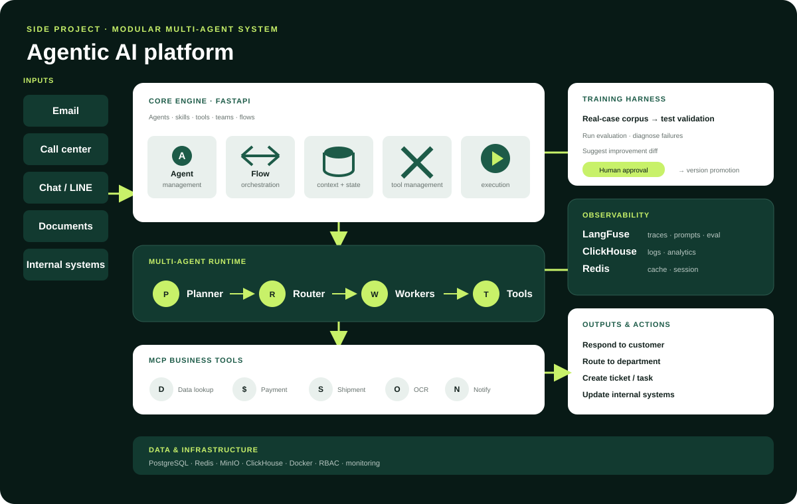

Selected work · 2022—2026
AI systems built for production, not just demos.
Six selected systems spanning computer vision, multi-agent workflows, revenue recovery, enterprise data infrastructure, and secure AI workspaces—each built around a real business need.
Explore the workProduction impact
Employer systems, described without proprietary details.
These case studies focus on the business problem, my contribution, system design, and outcomes that can be shared publicly.
01 / Computer vision
Visual Product Recognition & Shelf Analytics
Turn a shelf photo into accurate product recognition and actionable retail performance data.
Manual shop audits were time-consuming and difficult to scale across many product categories and store conditions.
Developed a computer vision system using detection, classification, and similarity search to recognize products and analyze shelf placement.
My role
Led the visual-analytics work; developed and deployed the detection, classification, and similarity-search pipeline; built Flask APIs and OpenCV post-processing; and connected AI outputs to downstream BI analysis.
System flowVisual recognition pipeline

Image Input
Capture or upload shelf imagery
Object Detection
Locate each product on the shelf
Classification
Map detected products to categories
Similarity Search
Match against the reference catalog
Shelf Analytics
Surface availability and performance
Business impact
45 → 15minutes per store audit
- Covered 750+ SKU classes
- Achieved 90% recognition accuracy
- Reduced manual workload by approximately 4×
YOLOCNN / ViTFAISS + KNNOpenCVFlaskDocker
02 / Agentic AI
AI-Powered VOC Inquiry Intelligence
Transform high-volume email and call data into classified, routed, and measurable customer intelligence.
Manual analysis of 3,000+ emails and 600+ calls per day was inconsistent, slow, and difficult to scale across departments.
Built an AI-driven inquiry pipeline to classify intent and sentiment, retrieve business context, and route cases to the responsible team.
My role
Architected and deployed the agent workflow; developed LLM-based classification for voice and text; designed Multi-RAG context retrieval and routing; and added LangFuse observability for operational analysis.
System flowInquiry intelligence pipeline

Channels
Email and calls
Transform
Parse and normalize
Classify
Intent and sentiment
Retrieve
Multi-RAG context
Reason
Agent decision
Measure
Type and satisfaction
Route
Responsible team
Monitoring + Power BI → feedback loop for continuous improvement
Daily scale
3,600+inquiries handled across channels
- Exact production accuracy and response-time figures are confidential
- Designed urgent and negative case escalation
- Enabled satisfaction and inquiry-trend analysis
LangChainCrewAILangFuseMulti-RAGPower BI
03 / Intelligent automation
Autonomous Sales Recovery Agent
Detect ambiguous transaction signals, identify recovery opportunities, and optimize the next best follow-up.
Potential sales were lost because transaction data could be ambiguous, incomplete, or difficult to prioritize manually.
Developed an autonomous recovery agent to analyze transaction signals, infer recovery actions, and optimize follow-up strategies.
My role
Built the autonomous recovery logic, including ambiguity detection, heuristic inference, lead-time analysis, and next-best-action recommendations for follow-up workflows.
System flowSales recovery workflow

Transaction Data
Orders, payments, and customer records
Ambiguity Detection
Missing or conflicting information
Lead-Time Analysis
Timing, delay, and follow-up windows
Recovery Strategy
Prioritized next-best action
Sales Follow-Up
Email, call, task, or escalation
Core value
Always onrecovery opportunity monitoring
- Exact production revenue figures are confidential
- Prioritized high-value recovery opportunities
- Moved follow-up decisions into a repeatable workflow
Heuristic inferenceLead-time analysisBusiness rulesAirflow
04 / Data engineering
Data Platform & BI Infrastructure
Create a governed data foundation for reporting, self-service analytics, automation, and future AI applications.
Business data was scattered, making reporting, BI, and AI use cases harder to scale.
Built scalable data infrastructure to support centralized analytics and enterprise-wide business intelligence.
My role
Built the enterprise data foundation from scratch using Airflow, dbt, Docker, and SQL; established centralized warehouse models; and enabled downstream Power BI and automation use cases.
System flowData platform architecture

Sources
ERP, CRM, files, APIs
Airflow
Scheduled ETL / ELT pipelines
dbt
Models and transformations
Warehouse
Curated, centralized data
Applications
Power BI and AI products
GovernedSecureScalableReliable
Foundation
One platformfor analytics, automation, and AI
- Exact production adoption figures are confidential
- Centralized reporting logic into reusable models
- Enabled self-service BI and automation workloads
Apache AirflowdbtDockerSQLData WarehousePower BI
Independent engineering work
Platforms I am designing and building beyond employer systems.
These projects are active builds. Current evidence and next milestones are stated explicitly so work in progress is not presented as finished production software.
Side project / Agentic AI platform
A platform to build, evaluate, and continuously improve business AI agents.
Designed beyond prompts: workflow control, tool integration, evaluation, observability, and human review in one modular system.
My role
Designed the modular platform architecture, multi-agent runtime, workflow orchestration, business-tool boundary, evaluation loop, observability model, and human-controlled version-promotion flow.

EmailCall centerChat / LINEDocumentsInternal systems
↓
Core engine · FastAPIAgent management · Flow orchestration · State · Tools · Execution
↓
Multi-agent runtime
Planner→Router→Worker agents→Tools→Response
Real-case corpus, test validation, evaluation, failure diagnosis, human approval, and version promotion.
LangFuse traces, ClickHouse analytics, Redis state, and MinIO artifacts.
Lookup, refund, payment, shipment tracking, OCR, parsing, notification, and calculation.
Current evidence
Architecture and workflow design are published here. Next milestone: release a focused reference implementation with tests, evaluation traces, and documented limitations.
Side project / Enterprise AI workspace
Work in progressHermes Enterprise AI Workspace.
A secure enterprise layer around Hermes Agent for governed conversations, observable tool use, persistent context, and controlled operating cost.
My role
Designing and implementing the Next.js portal and FastAPI security boundary, including authentication, session ownership, SSE streaming, tool traces, attachments, configurable personas, and usage visibility.
ENTERPRISE ASSISTANT
How can I help your team?
01
Analyze a documentAttach an image, PDF, or text file
02
Run a business workflowStream reasoning and tool activity
Ask Hermes anything…↑
Teams need the power of an autonomous agent without exposing credentials, losing session ownership, or operating without usage visibility.
A full-stack workspace that adds identity, streaming chat, tool traces, file handling, configurable personas, and cost monitoring around Hermes.
Hardening the proof of concept into a reliable multi-user enterprise architecture with persistent memory and production-ready controls.
System architectureProtected from browser to agent runtime
Current stage
POC → Platformactively evolving toward an enterprise-ready workspace
- Keeps the Hermes API credential out of the browser
- Separates portal identities and conversation ownership
- Makes agent behavior, tools, and cost inspectable
Next.jsTypeScriptFastAPIPythonSSESQLiteHermes AgentHoncho
Prototype status & limitations
A working portal and backend prototype exists locally. Public repository and recorded demo are not yet released. Planned hardening includes enterprise SSO, RBAC, multi-user reliability testing, and deployment documentation.
Why me
Technical depth connected to measurable business outcomes.
End-to-end AI delivery
From business problem and model development through data pipelines, APIs, deployment, and adoption.
Strong applied AI background
Experience across agentic AI, LLM systems, computer vision, data engineering, and automation.
Business impact focus
Proven results in reducing workload, improving operational efficiency, and enabling scalable analytics.